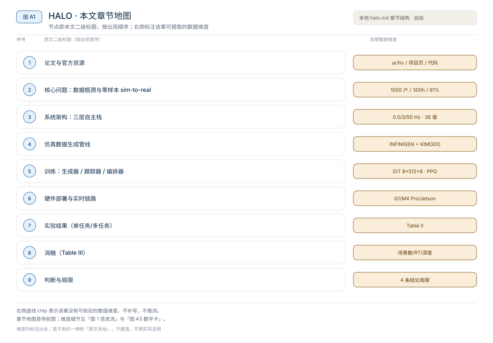
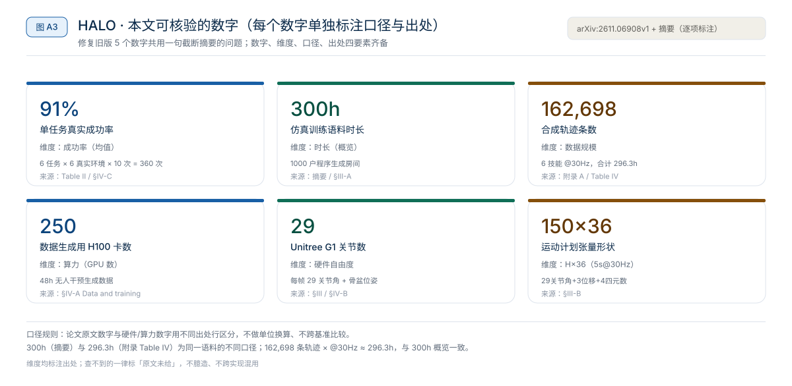

原题与资源：Perceptive Humanoid Motion from Simulation（系统名 HALO = Humanoid Autonomy, Learned in simulation, running Onboard） · arXiv:2611.06908 · 项目页 · 代码
一句话：HALO 用一个在仿真里合成「视觉-语言-运动」数据的管线，绕开了人类遥操作这个数据瓶颈；训练时从未见过真实家庭，却零样本迁移到 6 个未建图真实环境，360 次试验平均 91% 成功率。【摘要】
阅读成本：正文约 9200 字 / 10 个章节 / 5 张图；目录按本文原有章节顺序排列，论文事实均取自 arXiv:2611.06908v1 原文解析，未用模型记忆补写。
目录（点击跳到对应章节）：
- ① 论文与官方资源
- ② 核心问题：数据瓶颈与零样本 sim-to-real
- ③ 系统架构：三层自主栈
- ④ 仿真数据生成管线
- ⑤ 训练：生成器 / 跟踪器 / 编排器
- ⑥ 硬件部署与实时链路
- ⑦ 实验结果
- ⑧ 消融
- ⑨ 判断与局限
- ⑩ 如何用到自己的项目

图 A1：本文章节地图（节点即原文 h2 标题）。自绘，依据本文，不新增事实。
HALO 把「像素 + 自由语言 → 低级关节指令」这个配对监督问题，从「靠人采集」改成「靠仿真合成」。它的训练语料全部在 1000 个程序生成的房间里产生：一个运动扩散模型生成全身人形运动，一个程序化场景生成器提供环境，仿真器把运动摆进环境并渲染机器人的第一视角视频。整条链路不扫描真实家庭、不戴动捕、不依赖特权物体状态，数据规模随算力而不是随人力增长。最终栈在 Unitree G1 上全机载运行，零样本迁移到 6 个未建图的真实环境，单任务 91% 成功率。【§I–§III】
来源约定：本文事实只取自 arXiv:2611.06908v1 全文解析，没有用模型记忆补写论文细节。
标注约定：【摘要】指论文摘要；【§X】指原文第 X 章 / 节；【表 II / III / IV】指原文表格。
版本：arXiv:2611.06908v1；发布日期 2026-11-04；查阅日期 2026-11-08。
① 论文与官方资源
| 资源 | 入口 | 阅读用途 |
|---|---|---|
| 论文 | arXiv:2611.06908 | 系统、数据管线、训练、实验与消融（全文） |
| 项目页 | apple-aiml-research.github.io/ml-halo | 视频、代码与数据说明 |
| 源码 | apple-aiml-research/ml-halo | 数据生成、模型训练与部署 |
| 仿真 | Isaac Sim（渲染）/ Isaac Lab（RL）【§III-A / 附录 C】 | 运动合成、tracker 强化学习 |
论文题目：Perceptive Humanoid Motion from Simulation；系统名：HALO（Humanoid Autonomy, Learned in simulation, running Onboard）；作者：Siyuan Hu, Abulikemu Abuduweili, Yue Meng, Shipeng Liu, Quentin Leboutet, Chen Chen, Matthias Müller, Vladlen Koltun（全部 Apple）；arXiv：2611.06908v1；发布：2026-11-04。
相关工作分三束：① 数据获取——遥操作（ALOHA、TWIST）与可穿戴动捕（UMI）把数据生成和人力绑定；② 运动生成——KIMODO、PhysDiff 等运动扩散模型；③ 仿真到真实——Infinigen 程序化场景、Isaac Sim/Lab、H1 等人类形 loco-manipulation。【§II】
核心定位：人形自主的瓶颈不是电机或执行器，而是「把看到的和被要求的，映射到实际关节指令」所需的配对监督数据不存在于互联网，只能逐条刻意生产；HALO 用仿真把这条生产线的边际成本降到「加 GPU」。
② 核心问题：数据瓶颈与零样本 sim-to-real
图 A2：一句话主张与速览字段。自绘，依据本文，不新增事实。
一句话：HALO 用一个在仿真里合成「视觉-语言-运动」数据的管线，绕开了人类遥操作这个数据瓶颈；训练时从未见过真实家庭，却零样本迁移到 6 个未建图真实环境，360 次试验平均 91% 成功率。【摘要】
图 1：HALO 的三层自主栈（编排层 0.5 Hz → 生成层 3 Hz → 跟踪层 50 Hz）与每个环节的可核验张量 / 频率维度。自绘，依据 arXiv:2611.06908v1 Fig.2 / §III / §IV-B；不是论文原图。
对比三种路线：
- 遥操作 / 动捕（ALOHA、TWIST、UMI）：数据质量高，但「至少 1 小时人力换 1 小时数据」，线性税。
- 重建式仿真（VLK、GRAIL）：需要真实 3D 扫描与人工资产标注；分布受真实扫描限制。
- HALO（程序化仿真）：INFINIGEN 生成房间，KIMODO 生成运动，渲染第一视角视频；不扫描、不标注、数据随算力扩展。【§I / §III-A】
- 节省了什么：把人类操作员移出数据回路；1000 个房间的语料由 250 张 H100 跑 48 小时无人干预生成（§IV-A）。
- 保留了什么：预训练 VLM 的视觉-语义对齐（生成器编码器冻结 Qwen3.5-2B）；真实家庭的 sim-to-real 由深度条件 tracker + 执行器建模兜底（§III-C）。
- 代价是什么：任务设计仍要人写 prompt 与编排关键帧；感知以视觉为主，缺接触觉；生成器与跟踪器接口很窄（§V）。
- 读者该学什么：把「数据引擎」和「在机栈」拆开看——前者决定上限与扩展性，后者决定能否真上机器人。
③ 系统架构：三层自主栈
HALO 的机载自主栈分三层（Fig.2），从高到低解决「语义」与「物理」两个层级的感知：
- 编排层（Orchestrator，~0.5 Hz）：一个 VLM 每约 2 秒把自由语言请求解析成「子任务序列」，每个子任务指定一个技能与适用物体；闭环监控动作成败、推进或重试。【§III-D / 附录 D】
- 生成层（Motion Generator，~3 Hz）：把「当前子任务 + 第一视角 RGB」映射成 5 秒全身运动计划——一个 H=150 帧、每帧 36 值的运动学计划，36 = 29 个关节角 + 3 维骨盆平移 + 4 维骨盆四元数，都相对 t 时刻的骨盆坐标系（从而与全局摆放无关）。【§III-B】
- 跟踪层（Motion Tracker，50 Hz）：把运动计划结合机载深度与本体觉，经 PD 控制器输出低级关节指令，在真实物理世界里落地。【§III-C】
三层频率递进（0.5 / 3 / 50 Hz）是「语义决策慢、底层控制快」的设计：上层只在必要时重规划，下层每 20 ms 跟一次轨迹。
④ 仿真数据生成管线
管线（Fig.3）分四步，每一步都把不可规模化的人力环节替换成可并行、可确定的程序环节：
- 任务分解：每个任务拆成若干运动段，每段由「文本 prompt + 可选航点 + 终止关键帧」参数化。例如「坐扶手椅」拆成「向前走 / 转身 / 坐下」，其中「向前走」的航点把机器人引到座位前，最后一段强制一个锚定到目标家具的坐姿关键帧。分解只写一次，跨所有程序化环境复用。【§III-A】
- 运动合成：把文本与几何约束（航点、关键帧）送给 KIMODO（运动扩散模型，arXiv:2603.15546）逐段生成稠密全身运动，再缝合成连续全局轨迹。KIMODO 纯运动学，可能产生脚滑、穿地、不连续；所以每段生成 N 个候选，用前向运动学几何验证器（脚滑、穿地、腾空相位、关节极限）打分，只留最高分候选。【§III-A】
- 场景摆位：用 INFINIGEN 程序化生成 1000 个房间（客厅 45% / 办公室 30% / 卧室 25%，边长 3.5–9.5 m），从布局抽 2D 占据栅格，再联合把轨迹与目标家具以 SE(2) 变换嵌进场景，取第一个与轨迹 / 家具 / 周边家具都无碰撞的构型。因为每集由随机种子 + 轻量摆位记录确定，运动生成与渲染解耦——可换分辨率、换相机内参、换物理仿真器重渲染而不重生成运动。【§III-A】
- 第一视角渲染：在 INFINIGEN 场景里运动学回放轨迹，用与机器人匹配的仿真鱼眼镜头渲染第一视角视觉；为缩小视觉 sim-to-real 差距，做大量域随机化（色温、曝光、对比度、运动模糊、传感器噪声，Fig.3C）。原生路径追踪在此规模下太贵，于是把全局光照与阴影烘焙进逐物体自发光贴图（一次性预处理），之后任何标准光栅化器都能交互式渲染，使管线高度可扩展、仿真器无关。语料合计 300 小时配对视频-语言-运动，覆盖 1000 个环境。【§III-A / 附录 A】
语料规模（附录 A / Table IV）：6 个技能各一个数据集，合计 162,698 条轨迹、296.3 小时 @30 Hz；摘要给的 300 小时是同一语料概览口径。
⑤ 训练：生成器 / 跟踪器 / 编排器
生成器训练（§III-B）。输入第一视角 RGB 图像 I_t 与语言指令 ℓ，输出 H=150 帧的运动学计划 q̂ ∈ R^{H×36}（5 秒 @30 Hz）。模型是非对称编码器-解码器：
- 编码器：Qwen3.5-2B VLM（冻结），把 RGB + 自然语言映射到联合特征嵌入；冻结是为了不优化 20 亿参数、只跑一次前向，复用其 web-scale 视觉-语义对齐（「坐椅子」「推箱子」这类概念）。
- 解码器：从零训练的扩散 Transformer（DiT，8 blocks / width 512 / 8 heads），吃 VLM 特征嵌入，生成稠密全身运动计划；用 flow matching 训练，推理时 15 步 Euler 采样。
- 异步生成：闭环部署要生成器随新观测持续运行。朴素同步方案会在前向期间让机器人失去控制信号、必须停在上一个指令位姿——这对动态系统既不平顺也不安全。HALO 让生成器异步运行：当前计划覆盖 [T, T+H)，下一计划在 T+d（0<d<H）就绪，为避免接缝处运动抖动，把机器人已承诺执行的 P=15 帧（0.5 秒）作为干净、无噪 token 直入生成器，占序列前 P 帧，模型只去噪余下 H−P=135 帧（4.5 秒）。训练时就以这种条件化形式内化连续性，使平滑过渡成为网络固有属性，而非昂贵的推理期补丁（对比 RTC [39] 推理期补丁只鼓励连续性、且每步去噪都有梯度延迟惩罚）。
跟踪器训练（§III-C），分三阶段把运动计划落到物理执行：
- Phase 1 · 特权专家：每个技能各训一个 PPO 专家，用合成轨迹 + 把 LAFAN1 人形动作重定向到 G1；专家看特权仿真数据（本体觉、未来 10 帧计划、通过局部高度图的真实场景几何），以 50 Hz 输出关节位置目标，由低级 PD 控制器执行。所有专家共享一个模仿奖励（惩罚关键运动学链的跟踪误差）；纯运动学奖励对操作任务不够（完美姿势但物体没动），所以物体中心专家额外加「手靠近 + 正确物体位移」奖励项。
- Phase 2 · 多教师蒸馏：把专家蒸馏成单一学生，只条件于机载输入（运动计划 + 第一视角深度 + 本体觉 + IMU）；训练是 BC 与 DAgger 混合，每个仿真实例由对应专家监督，学生从不平均不同专家的冲突动作。1D 卷积编码本体觉历史，卷积网络处理深度图，残差 MLP 把隐变量映射到目标关节位置；学生不接收物体或地形坐标，必须从深度推断几何。
- Phase 3 · 多 critic 微调：蒸馏受教师能力上限约束，部分可观测留下残余跟踪差；直接在学生上做带深度的 RL。用 multi-critic PPO：actor 共享，但每个技能一个独立 critic（从 Phase 1 专家初始化），各 critic 只在本技能样本上训练并独立归一化优势，避免高量级回报主导策略梯度。
Sim-to-real：除域随机化外，显式建模执行器物理（OmniXtreme）：从电机转子惯量解析推导各关节 PD 增益以保证统一自然频率与阻尼比，并按关节力矩极限缩放动作；随机动作延迟模拟硬件指令延迟；为保护深蹲时电机驱动，奖励函数直接惩罚膝盖处的过度负机械功率。剩余 sim-to-real 差距由域随机化处理——Phase 1/2 保持窄以保教师保真度，Phase 3 放宽：摩擦、回弹、质心、执行器增益、关节偏移、外部冲量推、物体质量；同时第一视角深度被 dropout / 散斑噪声 / 帧延迟 / 相机安装错位腐蚀。深度条件策略能主动应对上游运动学计划没预判到的几何变化（表 III）。
编排器（§III-D / 附录 D）：默认在 Mac mini 上用 Qwen3.6-35B-A3B（4-bit, MLX） 运行，与生成器共用一个服务引擎，从而无需联网即可运行；可选地，把请求路由到前沿云端模型 API 以获得更强推理与规划。
⑥ 硬件部署与实时链路
硬件平台是 Unitree G1，两处物理改装：自定义头mount 装 OAK-1W 相机，后置外壳装 Mac mini M4 Pro（64 GB）。感知与控制分布在这两台机器上，完全无绳、通过 ZeroMQ 异步级联（附录 E）：
- 外环：OAK-1W 以 120° RGB（1280×800 @30 fps） 流到 Mac mini，编排器与生成器在这里算运动学参考轨迹。
- 内环：轨迹作为设定点，送到机器人出厂的 Jetson Orin NX 上跑的内环；跟踪器吃计划 + 向下 55° 的 Intel RealSense D435i（424×240 @30 fps），发低级关节指令。
- tracker 是 PREEMPT_RT 内核上的 C++ 实时进程，通过锁无关三缓冲与硬件接口通信，保证严格周期；绕过 D435i 原生有噪声的深度，把原始立体 IR 对直接送 Jetson 上的 TensorRT 立体匹配模型（30 Hz）估干净深度，避免原生输出的遮挡与散斑伪影。【§IV-B】
⑦ 实验结果

图 A3：本文可核验的数字摘录。自绘，依据本文，不新增事实。
主训练语料 = 300 小时、1000 个程序生成房间（§III-A）。合成数据需 250 张 H100 跑 48 小时无人干预；生成器在 64 张 B200 上训练，跟踪器用 4 张 H100。受控仿真实验的留出集永远是完全没出现过的环境，因此每个指标都是对未见空间的泛化。【§IV-A / Table II】
单任务（表 II）：6 个任务在 100 个仿真 + 6 个真实环境各 10 次（合计 6000 仿真 + 360 真实试验）；策略达到 91% 仿真 / 91% 真实。逐项：GO-TO 98/92、SIT 84/85、DOOR 91/93、CROUCH 95/100、CRAWL 84/90、PUSH 93/88。
| 任务 | 仿真成功率 | 真实成功率 |
|---|---|---|
| GO-TO（走到命名物体） | 98 | 92 |
| SIT（坐椅子） | 84 | 85 |
| DOOR（侧身过半开门） | 91 | 93 |
| CROUCH（蹲下过障碍） | 95 | 100 |
| CRAWL（爬过矮障碍） | 84 | 90 |
| PUSH（推箱子） | 93 | 88 |
| 单任务均值 | 91 | 91 |
多任务（表 II）：用编排器跑三条代表性多任务链。VLM 的任务分解对 2–3 子任务链稳健；但链式成功率低于单任务成功率之积（DOOR→GO-TO 71% vs 89%），说明子任务不独立。细粒度分析显示：一个子任务结束时的姿态是额外因素——数据生成的域随机化覆盖不同初始姿态，但底座位置与朝向有时分布外。例如真实 CROUCH→GO-TO→PUSH 失败 5 次中的 3 次（60%）以头转向远离箱子结束，机器人从没把它纳入视野、被其他物体分心；CROUCH→SIT 有两次试着坐右边的沙发而非椅子，因为深蹲段的最终姿态。【§IV-D】
| 多任务链 | 仿真成功率 | 真实成功率 |
|---|---|---|
| DOOR→GO-TO | 71 | 100 |
| CROUCH→SIT | 73 | 60 |
| CROUCH→GO-TO→PUSH | 64 | 50 |
| 多任务均值 | 69 | 70 |
⑧ 消融
表 III 在 100 个留出仿真环境、每环境 10 次上做 SIT 的逐阶段消融，每块只变一个阶段，加粗行是 HALO 完整设置，Δ 是相对它的变化：
| 阶段 | 配置 | 成功率 | Δ |
|---|---|---|---|
| 训练场景数 | 1000 | 84 | — |
| 100 | 81 | −3 | |
| 10 | 64 | −20 | |
| 1 | 43 | −41 | |
| 实时分块 (RTC) | 训练期条件化 | 84 | — |
| 推理期 RTC | 66 | −18 | |
| 无 RTC | 24 | −60 | |
| 生成器解码器 | Flow matching | 84 | — |
| 回归 | 19 | −65 | |
| 运动跟踪器 | 带深度 | 84 | — |
| 无深度 | 74 | −10 |
读法：
- 场景数从 1 增到 100 时成功率从 43% 跳到 81%，再往上只多 3 个点——说明多样性收益在 100 户后边际递减，但 1 户几乎不可用。
- 无 RTC 时运动计划在每次交换处跳变，成功率掉到 24%；推理期 RTC 只把过渡「平滑」而非「保证」，仍比训练期条件化低 18 个点（66%）。
- 把 flow-matching DiT 换成同 backbone 的回归解码器掉到 19%：回归解码器易过拟合，分布外只保留粗根路径、丢掉关节细节导致脚滑；且 RTC 对非扩散模型不直接适用，异步生成下失去连续性。
- 去掉深度只剩本体觉，掉到 74%——深度是 tracker 应对未预知几何的关键。
⑨ 判断与局限
本文判断：仿真可以作为人形自主的数据引擎——把人类操作员移出数据回路后，整栈零样本迁移到训练与扫描都未出现的真实环境；但任务设计仍依赖人写 prompt 与关键帧，且感知以视觉为主、缺少接触觉。
局限与不确定项（以下均摘自 §V Conclusion，未作推断）：
- 任务设计仍依赖人：加一个新物理任务要人写它的 prompt 并编排运动序列的关键帧，所以技能库增长只与人能指定多少任务一样快。
- 感知以视觉为主，无接触觉：一旦物体离开相机视野或被遮挡，策略就没有「它还在」的信号，接触密集任务随之退化；触觉是自然解法。
- 生成器与跟踪器接口很窄：跟踪器跟随运动学计划，却不知道计划「为了什么」；把预期未来世界状态告知跟踪器是自然的下一步。
- 编排层相对简单：随着任务库增长，预计需要更 agentic 的系统。
图 A4：局限与不确定项摘录。自绘，依据本文，不新增事实。
覆盖范围：本页新增的导读、目录、章节地图、主张卡、数字卡与局限清单，均为原文信息的重排或摘录；正文、数据与实验结论未改动。维度均标注出处（§章 / 表），查不到的（如 DiT 层数/头数/FFN 宽度以外的超参、tracker 策略网络规模）已显式标「原文未给」，不臆造、不跨实现混用。
⑩ 如何用到自己的项目
HALO 最值得复用的是「仿真数据引擎 + 分层在机栈」的组合范式，而不是某个具体网络：
- 数据引擎：若你的任务能在仿真里程序化生成（场景 + 运动 + 渲染），优先用「运动扩散模型做运动 + 程序化场景做环境 + 几何验证器挑候选 + 鱼眼域随机化渲染」的配方，把数据边际成本从人力换成 GPU。代价是 KIMODO / Infinigen 这类基础模型与场景生成器的可得性与许可。
- 分层栈：把「慢 VLM 编排 / 中速扩散生成 / 快 RL 跟踪」的频率分层直接搬；异步生成时把已承诺帧作干净前缀、只去噪余下帧，是避免接缝抖动的实用手段。
- Sim-to-real：深度条件 tracker + 执行器物理建模（从转子惯量解析 PD 增益、随机动作延迟、惩罚负机械功率）比单纯域随机化更稳；代价是 RL 三阶段（特权专家→蒸馏→多 critic 微调）工程量大。
- 局限警示：别只抄架构不看前提——HALO 的 91% 建立在「自由语言 + 第一视角」且任务库由人设计；缺接触觉、编排层简单这两点，在接触密集或长链条任务上会先暴露（多任务真实 70%、三子任务链仅 50%）。